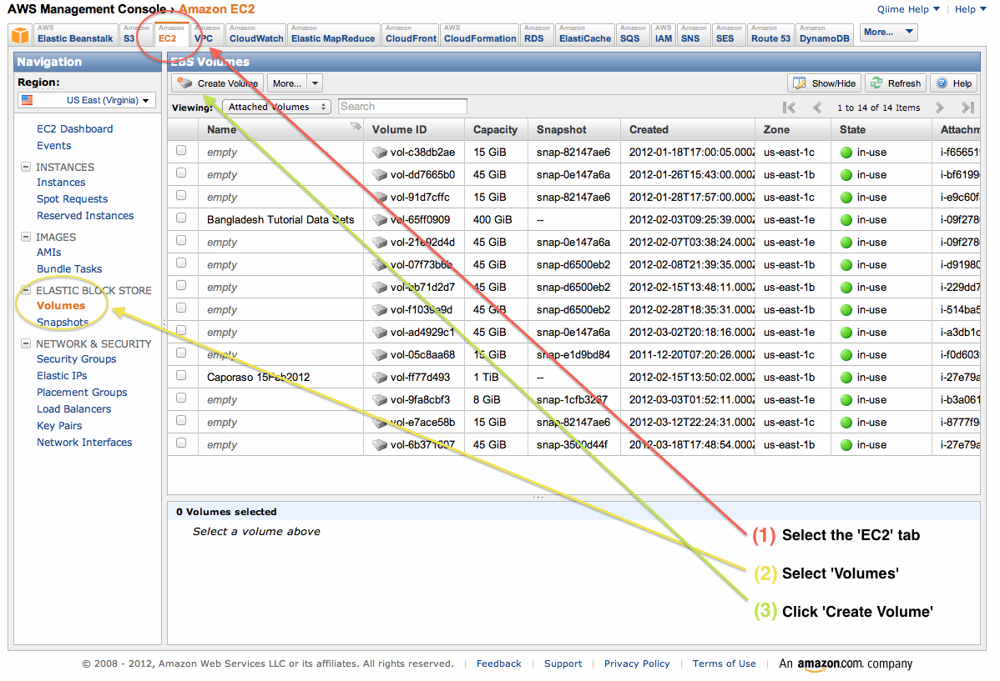

| News and Announcements » |
This document covers general steps in working with QIIME on Amazon Web Services (AWS). You’ll need your own AWS account to do this, and will need the AMI ID of the QIIME image that you want to run. You can find the latest QIIME AMI id on the QIIME resources page. These steps are also covered in the QIIME EC2 video.
To launch the QIIME EC2 image on the Amazon Cloud you will first need an AWS account. Create one on the AWS site if you don’t already have one. To get started with using AWS, check out their documentation on the AWS console page. You can load the QIIME EC2 image from the AWS console by searching for the AMI ID listed on the QIIME resources page.
Important: To use QIIME, you’ll need to have ssh access to your instance. You’ll set this up in the Configure Firewall step of launching the instance. You’ll need to choose Create new security group. Create a Group Name and Group Description (e.g., qiime-ssh for both), and then choose SSH from the Create a new rule drop down box. Click Add Rule and then Continue.
To connect to your EC2 instance with ssh you’ll need your key file, the Public DNS entry for your running EC2 instance, and an ssh client. You should have created and downloaded a key file when creating your first EC2 instance. On OS X and Linux, be sure that the permissions are set to 400 on this file, or you won’t be able to use it. If your key file is called $HOME/my_key.pem you can set the permissions with the command:
chmod 400 $HOME/my_key.pem
You obtain the Public DNS entry from EC2 on a per instantiation basis - every time you Launch or Start and instance, you’ll need to get this value again. See Figure 1 for where to find this information.

Figure 1: Identifying the Public DNS entry.
If you’re working on OS X or Linux, you already have an ssh client installed. If you’re working on Windows, one free option is PuTTY.
To connect to your running EC2 instance using ssh from Linux or OS X you’ll use a command like the following:
ssh -i PATH_TO_KEY ubuntu@PUBLIC_DNS_ENTRY
For example:
ssh -i ~/my_key.pem ubuntu@ec2-50-19-129-122.compute-1.amazonaws.com
Go here for instructions on using PuTTY to connect to your running EC2 instance.
After you’ve launched your EC2 instance you’ll likely want to get data into it. After completing your analysis, you’ll then want to get your data out. It’s a good idea to pull your important data back out of your EC2 instance as soon as possible to avoid any issues with losing data if any Amazon systems go down, or if you accidentally terminate your instance.
You can get data into and out of your running EC2 instance with a graphical tool or via the command line, which ever you find more convenient. Command line tools such as scp and sftp work fine for this. A good, free graphical tool for Windows and OS X is Cyberduck. This supports interacting with S3 buckets as well as EC2 instances (via sftp).
You will likely want to compress your files for each transfer. You can do this with the tar/gzip commands, or with a tool like WinZip on Windows. See Basic Unix/Linux/OS X commands for help with these commands.
The primary tool for moving data into and out of your EC2 instance is scp.
To copy data into your EC2 instance you’ll need to know that path to your key file, and the Public DNS entry for your EC2 instance (see Figure 1 for where to find the public DNS entry).
Your scp command will look like the following to transfer data into your EC2 instance:
scp -i PATH_TO_KEY PATH_TO_SOURCE_FILE ubuntu@PUBLIC_DNS_ENTRY:PATH_TO_DESTINATION_FILE
To transfer a file out of your EC2 instance, your command will look like this:
scp -i PATH_TO_KEY ubuntu@PUBLIC_DNS_ENTRY:PATH_TO_SOURCE_FILE PATH_TO_DESTINATION_FILE
Examples of each are:
scp -i ~/my_key.pem ubuntu@ec2-50-19-129-122.compute-1.amazonaws.com:~/Fasting_Map.txt ~/code/Qiime/examples/qiime_tutorial/Fasting_Map.txt
scp -i ~/my_key.pem ~/code/Qiime/examples/qiime_tutorial/Fasting_Map.txt ubuntu@ec2-50-19-129-122.compute-1.amazonaws.com:~/
Download and install Cyberduck. Installing should be straight-forward on OS X and Windows.
Launch Cyberduck by using your normal procedure for launching programs. You should see the Cyberduck window open. A new window or sheet will open.
To open a connection to your EC2 instance, click the ‘Open Connection’ icon on the top-left. Choose “SFTP (SSH File Transfer Protocol)” in the dropdown box (not Amazon Simple Storage Service!). In the Server field, enter the text from the Public DNS field associated with this instance (see Figure 1 for where to find this information). In the Username field enter ubuntu (exactly as written here). Do not enter a password. Expand the More Options section in the bottom of this window, and click the Use Public Key Authentication. A dialog will open - navigate to where you’ve stored your key and select the key that is associated with this instance. After filling in the field, the window should look like that in Figure 2. Click Connect.

Figure 2: Initiating a new connection.
After connecting, you’ll see a file browser on the remote system (Figure 3). If you’ve just created this instance you won’t see any files listed (because you haven’t put anything there yet). You can drag-and-drop files from your local system to your EC2 instance now (Figure 4). Those files will now be visible on the EC2 instance (Figure 5).

Figure 3. Remote file browser.

Figure 4. Drag and drop a local file to the EC2 instance.

Figure 5. Transferred file is visible on the EC2 instance.
When you run commands on the remote system, new output files and directories will be created (Figure 6). To drag those back to your local system, first switch to the Cyberduck window and hit the refresh icon. You should then see the newly created files, and you can drag and drop them back to your local system (Figure 7).

Figure 6. Create an output file on the EC2 instance.

Figure 7. Transfer file from the EC2 instance to the local system.
Get help with Cyberduck here.
Other options for getting data into and out of your EC2 instance include installing Dropbox in your instance, and then putting files in your Dropbox folders on your local system and the EC2 instance; or using the wget command to pull data from URLs. An example of the latter might look like the following:
wget http://greengenes.lbl.gov/Download/Sequence_Data/Fasta_data_files/Caporaso_Reference_OTUs/gg_otus_4feb2011.tgz
This will download the gg_otus_4feb2011.tgz file (the Greengenes reference OTUs) to your EC2 instance. You can find details on wget here.
As long as your EC2 instances are running, you’re paying for them by the hour. When you’re temporarily done using your EC2 instance, you can stop it from the AWS Management Console by selecting the instance and choosing Instance Actions > Stop (see Figure 8). Note that you still pay a very small storage fee for stopped instances, so if you’re permanently done with an instance you probably want to terminate it. You can restart a stopped EC2 instance by selecting that instance and choosing Instance Actions > Start.

Figure 8. Stopping or pausing an EC2 instance.
If you’re permanently done with an EC2 instance, you can terminate it by selecting the instance and choosing Instance Actions > Terminate. Once you’ve terminated an instance you can never get it back: all data in that instance, as well as any configuration changes you’ve made, etc, is lost forever, so be sure this is what you want to do.
The disk space is fairly limited on the EC2 instances. To get around this you can create a volume (the equivalent of an external hard drive) and mount that on your instance. Data that you store in this volume can be accessed across different launches of an instance, or across different instances, but can only be attached to one instance at a time.
Use the management console to create a volume. To do this, first click the EC2 tab. Next, select Volumes on the left sidebar. Then click Create Volume. See Figure 9.
Figure 9: Create an EBS Volume.
Next you must configure the volume you want to create. You have three options here. First, define the size of the volume. This will be based on the amount of data that you’ll need to store. Creating a volume that is around 10x the size of the raw data you want to analyze should leave you plenty of disk space for your analysis. Next, you must define what Availability Zone you’d like to launch your instance in. This must be the same zone that your instance is running in. This information is available under the ‘Description’ tab associated with your running instance (see Zone toward the bottom right of Figure 8). Last, you can define an snapshot that you’d like to create your volume from. You typically won’t use that here. See Figure 10.

Figure 10: Configure EBS volume creation.
Finally, you’ll attach your volume to your instance: the equivalent of plugging the USB hard drive into the computer. To do this, click the checkbox next to your volume, select More and then Attach Volume. Select the instance that you’d like to attach your volume to. If you don’t see your instance it may not be running, or you may have not selected the correct Availability Zone. Take note of the value associated with Device. You’ll need this in the next step (we’ll call this the attachment point). See Figure 11.

Figure 11: Configure EBS volume attachment.
ssh into your EC2 instance and run the following commands. In this example, I’m assuming that your attachment point is /dev/sdf/. If it’s not, replace all occurrences of /dev/sdf/ with your actual attachment point.
The first time you use your volume you’ll need to run this command. Do not run this command on an instance that you already have data in - that will erase your data!
sudo mkfs.ext4 /dev/sdf
One your first time attaching a volume to a new instance, you’ll need to run this command:
mkdir $HOME/data
Anytime you attach or re-attach your volume to an instance (so after starting a new or stopped instance) you’ll need to run these commands:
sudo mount /dev/sdf $HOME/data
sudo chown ubuntu $HOME/data
sudo chgrp ubuntu $HOME/data
Once you’ve created your device, you only need to go through the attachment step to attach to future instances. This is the step illustrated in Figure 11. Note that you’ll need to create future instances in the same availability zone as this volume if you’d like to attach this volume.
QIIME instances can be loaded using StarCluster, which provides an extremely convenient means for starting and using virtual clusters on AWS. This AWS instance also contains support for the IPython Notebook, which provides a convenient interface for creating reproducible analysis pipelines that can easily be shared with others or published as supplementary material with journal articles.
To start using StarCluster and IPython Notebook, you should see their respective install instructions. Your StarCluster config file should look like this:
[cluster my.qiime.cluster]
node_image_id = LATEST-QIIME-AMI # see http://qiime.org/home_static/dataFiles.html
cluster_user = ubuntu
keyname = YOUR-KEY
cluster_size = DESIRED-CLUSTER-SIZE
node_instance_type = DESIRED-INSTANCE-TYPE
plugins = ipcluster
Everything in CAPS should be replaced with the corresponding information.
After launching your cluster, we recommend that you connect as the ubuntu user. You can do this as follows:
starcluster sshmaster CLUSTER_TAG -u ubuntu
where CLUSTER_TAG refers to the cluster_tag that was specified when you launched your cluster with starcluster start.
To run jobs in parallel on this system, you’ll next need to edit the qiime_config file on the cluster. This file is $HOME/.qiime_config_default. Edit the values cluster_jobs_fp and temp_dir so they looks like the following:
cluster_jobs_fp start_parallel_jobs_sc.py
temp_dir $HOME/temp/

{kind=link}